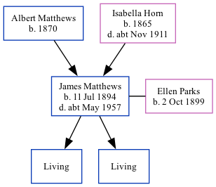

James Charles Matthews 1894 - c1957
[ Home ] | [ Calendar ] | [ Surnames Index ] | [ Family History ]The son of Albert Matthews and Isabella Horn, James Matthews, the second cousin twice-removed on the father's side of Nigel Horne, was born in Ramsgate, Kent, England on Jul 11, 18941,2,3,4, was baptized there at Christ Church on Feb 11, 1896. He also married Ellen Parks (with whom he had 2 surviving children Albert J and George D) there at St Luke's Church, Hollicondane Road, c. Aug 19215. Like his father, he was a mariner.
Throughout his life, he lived on 30 Royal Road in Ramsgate on Apr 2, 19111; and on 64 Alexandra Road in Ramsgate on Sep 29, 19392.
He died c. May 1957 in Thanet, Kent, England4.
Parents
- Albert was born in 1870
- Isabella was born in 1865
Citations
- 1911 Census for England & Wales - Findmypast (was age 17 and the son of the head of the household)
- 1939 Register - Findmypast (was the head of the household)
- England & Wales births 1837-2006 - Findmypast
- England & Wales deaths 1837-2007 - Findmypast
- Kent Marriages And Banns - Findmypast
Media
England & Wales births 1837-2006 - BMD/B/1894/3/AZ/000366/114
England & Wales marriages 1837-2005 - BMD/M/1921/3/AZ/000852/018
Kent Baptisms - GBPRS/CANT/B/96523635
Kent Marriages And Banns - GBPRS/CANT/M/94065484/1
1939 Register - TNA/R39/1766/1766D/019/24
England & Wales Deaths 1837-2007 - BMD/D/1957/2/AZ/000646/137
Family Tree
Generated by Ged2Site. Last updated on Jul 20, 2025